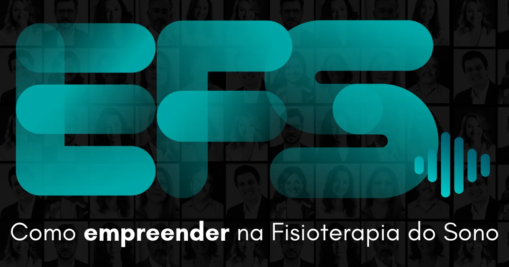
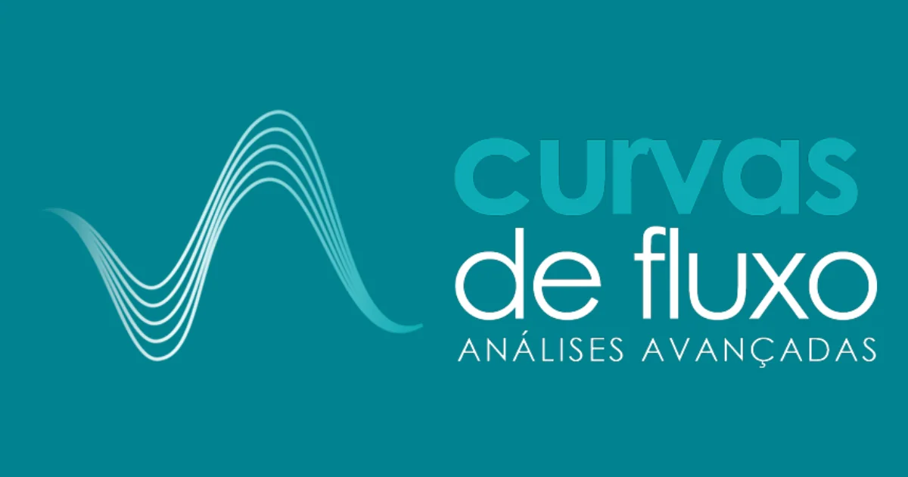

É para você se:
- se formou com a Fisioterapeutas do Sono;
- quer seguir discutindo casos com quem atende sono;
- quer transformar a fisioterapia do sono em negócio.
Black FridayFisioterapeutas do Sono · Por tempo limitado
Seu combo:
Formação e atualização para conectar o conhecimento à sua prática no cuidado com o sono.
Com Flávia Baggio Nerbass, Liliane Mendes e Rafaela Andrade.

Mantenha o raciocínio clínico em dia com casos reais.
Discuta o caso difícil com quem atende sono.
Saiba quanto cobrar e como organizar o atendimento.
Aprenda a desenvolver seu negócio, com certificado.
Estude o Como Empreender no seu ritmo, por 24 meses.
Você se formou e já atende sono. Agora as perguntas são outras: quanto cobrar, como ter paciente, como não depender só do médico para receber indicação.
E o caso difícil que chega na segunda-feira continua pedindo alguém com quem discutir.
É para você se:
Não é para você se:
Educação continuada para a clínica. Estrutura para o seu negócio.

Assinatura de 1 ano
Acompanhe discussões de casos e evidências recentes em uma comunidade multiprofissional para quem atende sono.
Discuta casos reais, compare hipóteses e identifique perguntas que ajudam a compreender o paciente. Diferentes áreas contribuem para analisar decisões, limites de atuação e possibilidades de encaminhamento.
Entenda o que os estudos mostram, a quem seus resultados se aplicam e quais são seus limites. A curadoria conecta evidências relevantes aos desafios do atendimento, com convidados conforme a programação.

24 meses de acesso
Um curso feito por e para fisioterapeutas do sono, para estruturar a marca, o preço e a gestão do consultório.
Certificado.
Compartilhe dúvidas e experiências, acompanhe a preparação dos casos e contribua com outras leituras. Você pode enviar situações da sua prática para avaliação; a apresentação é opcional e depende da seleção da equipe.
Convidados de diferentes áreas ajudam a explorar as interfaces do sono. Painéis, discussões de casos complexos e outros formatos podem integrar a programação e ampliar a conversa sobre o mesmo paciente.
A jornada prevê oportunidades como Vitrine Profissional, participações selecionadas e acesso antecipado a iniciativas. Esses benefícios dependem de elegibilidade, participação, disponibilidade e regras do Clube; a vitrine não garante pacientes ou indicações.
Questões comentadas em e-book para apoiar a revisão para a prova de dezembro.

Para uso até 20/12.

3% de desconto no siteAté 30/11/2026.
Benefícios não acumulativos. Para os combos, fale com o telemarketing.

Só nas primeiras 24 horas
Aula 1 do curso Hipoxemia Noturna, para quem entrar até as 7h de 18/11.
30% de desconto e o dobro de acesso ao curso: condição de Black Friday, por tempo limitado.
Oferta Black Friday
De R$ 3.044 por
12x de R$ 220,37
ou R$ 2.130,80 à vista,
no Pix ou no boleto.
12 mesesde Clube de Estudos
24 mesesde Como Empreender
CARTÃO PIX BOLETO
7 dias de garantiapara conhecer e decidir.
Assista, decida e, se não fizer sentido, peça o reembolso integral em até 7 dias.
Doutora pelo Laboratório do Sono do InCor-HCFMUSP.

PhD pela Universidade de Sydney e professora da UFMG.
Doutora pelo Laboratório do Sono do InCor, com pesquisa que embasou um posicionamento da American Thoracic Society.
Além de viverem a prática da ciência do sono em seus consultórios diariamente, já formaram mais de 400 fisioterapeutas e profissionais do sono.
A formação foi o começo. O cuidado continua.
A formação oferece uma base; o atendimento continua trazendo perguntas e a pesquisa segue avançando. O Clube acompanha essa etapa com análise de casos, leitura crítica de evidências e troca entre profissionais. Ao longo do ano, você relaciona o que já aprendeu a novas situações e conhece outras formas de pensar o mesmo paciente.
Não. Ele serve para quem já atua no sono e para quem ainda quer atuar. Os temas vão da construção da marca e da escolha entre PF e PJ à precificação, captação, fidelização e gestão do consultório.
No combo Formados, você participa da jornada anual do Clube, com dois encontros ao vivo por mês: Mesa Clínica do Sono e Atualização Aplicada. A proposta reúne discussão clínica, pesquisa com contexto e contato com diferentes perspectivas profissionais.
Entre os encontros, a comunidade permite continuar as conversas. Também fazem parte da experiência os Mapas Clínicos, a curadoria de materiais, as gravações disponibilizadas no acervo e a possibilidade de submeter casos à equipe.
A Mesa Clínica do Sono parte de situações reais para explorar achados, perguntas, hipóteses e decisões. A discussão permite comparar raciocínios e reconhecer quando outra área profissional pode contribuir.
A Atualização Aplicada parte da pesquisa: o grupo analisa evidências selecionadas, sua qualidade, suas limitações e o que elas podem acrescentar ao atendimento. Os dois formatos se complementam ao aproximar estudo e prática.
O Clube tem uma proposta multiprofissional e pode receber profissionais de diferentes áreas relacionadas ao sono. As discussões valorizam as interfaces entre profissões e os limites de cada atuação.
A oferta deste combo Formados continua sendo exclusiva para quem já se formou com a Fisioterapeutas do Sono.
Não. Ele oferece educação continuada para desenvolver repertório, acompanhar pesquisas e discutir a prática. Não corresponde a uma formação completa, organizada do conteúdo básico ao avançado.
Você não precisa comparecer a todos os encontros ao vivo. As gravações que forem disponibilizadas poderão ser assistidas depois, enquanto sua assinatura estiver ativa, respeitando as regras e a disponibilidade do acervo.
Estar ao vivo permite fazer perguntas e contribuir na hora, mas as gravações e a comunidade ajudam a manter a continuidade quando sua rotina não permite participar.
Você pode encaminhar casos e situações para avaliação da equipe. A escolha considera a pertinência para a discussão, o tema, a programação e a agenda; o envio não assegura a apresentação do caso.
Apresentar é opcional. Você também pode participar acompanhando a análise, fazendo perguntas e compartilhando sua perspectiva.
O Clube inclui Mapas Clínicos e seleção de artigos e materiais vinculados à curadoria dos encontros. Sínteses e outros apoios são disponibilizados conforme a programação. A equipe prioriza o que ajuda a compreender a discussão e avaliar a aplicação das evidências.
É um ambiente reservado aos membros para compartilhar perguntas, experiências e materiais selecionados. As conversas podem envolver a preparação dos casos, os temas dos encontros e novidades relevantes para o sono, favorecendo a aproximação entre profissionais ao longo da jornada.
Conforme os temas e a programação, o Clube pode reunir especialistas convidados, painéis multiprofissionais, debates de casos complexos, controvérsias e desafios de raciocínio. Os formatos e as participações dependem da agenda e da disponibilidade de cada iniciativa.
É uma oportunidade de apresentar a atuação de membros elegíveis no ecossistema do Clube. O perfil poderá reunir informações profissionais e formas de contato, conforme os critérios definidos pela equipe.
A inclusão depende das regras de elegibilidade, participação e disponibilidade. A exposição na vitrine não representa garantia de pacientes, contratos ou indicações.
Membros podem ter até 15% de desconto em formações elegíveis, de acordo com as condições em vigor na compra. Acesso antecipado, participações e outras oportunidades também dependem da programação, da disponibilidade e dos critérios de cada benefício.
Os 24 meses de acesso são para o curso Como Empreender. O Clube de Estudos é uma assinatura de 1 ano, com encontros ao vivo mês a mês.
O quiz comentado da prova de certificação em e-book e os cupons Biologix e CPAPS. O Biologix oferece 10% de desconto, frete grátis e 1 mês de assinatura grátis, para uso até 20/12. O CPAPS oferece 3% de desconto no site até 30/11/2026 e combos promocionais: CPAP AirSense 11 + Oxímetro WristOx + Máscara N30i; CPAP ResMart G3 + Kit de Oximetria SpO2; CPAP DreamStation Auto + Máscara DreamWear. Benefícios não acumulativos. Para os combos, fale com o telemarketing.
A Aula 1 de Hipoxemia Noturna, “Carga hipóxica: por que precisamos ficar atentos?”, também é um bônus para quem entrar até as 7h de 18/11, no horário de Brasília.
Até 12x no cartão, Pix ou boleto. O combo está por 12x de R$ 220,37 ou R$ 2.130,80 à vista, com 30% de desconto na condição da Black Friday.
O combo Formados reúne o Clube de Estudos e o Como Empreender, com os acessos e bônus descritos nesta página. Os seis cursos da vitrine são compras separadas, com 20% de desconto na Black e o acesso de costume de cada curso.
Por tempo limitado, durante a Black Friday. Cada benefício tem suas condições específicas, descritas na seção de bônus.
O combo tem 7 dias de garantia. Nesse período, você pode conhecer o conteúdo e solicitar o reembolso integral se decidir não continuar. Depois desse prazo, consulte as regras da contratação e fale com a equipe para esclarecer as condições aplicáveis.
 20% OFF
20% OFFRevisão para a prova de certificação: mais de 40 horas, 62 aulas e quiz comentado.
De R$ 2.397 por
12x de R$ 198,32
ou R$ 1.917,60 à vista
 20% OFF
20% OFFPolissonografia e manejo da pressão positiva, com casos reais.
De R$ 1.697 por
12x de R$ 140,40
ou R$ 1.357,60 à vista
20% OFFDo laudo à decisão clínica na hipoxemia noturna.
De R$ 1.607 por
12x de R$ 132,96
ou R$ 1.285,60 à vista

20% OFFAvaliação do paciente pela curva de fluxo respiratório no sono.
De R$ 997 por
12x de R$ 82,49
ou R$ 797,60 à vista
 20% OFF
20% OFFAs particularidades do sono na criança, com e-book de quase 100 páginas.
De R$ 897 por
12x de R$ 74,22
ou R$ 717,60 à vista
 20% OFF
20% OFFOs conceitos para começar a tratar o paciente, em 9 horas.
De R$ 697 por
12x de R$ 57,67
ou R$ 557,60 à vista